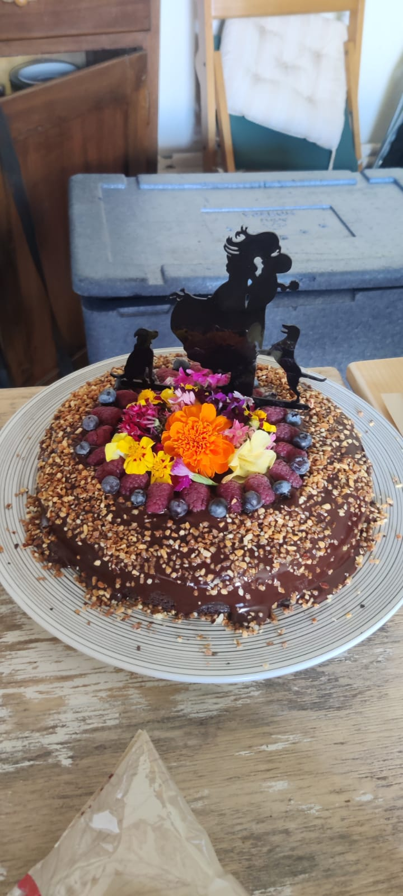

Tarta de chocolate con flores y frutos rojos
Ingredients
10×
- 200 g de harina
- 50 g de cacao en polvo
- 180 g de azúcar
- 1 sobre de levadura
- pizca de sal
- 3 huevos
- 200 ml de leche
- 100 ml de aceite
- 200 g de chocolate negro
- 200 ml de nata
- 50 g de avellanas tostadas picadas
- frambuesas
- arándanos
- flores comestibles

Preparación
Paso 1
Mezclar 200 g de harina, 50 g de cacao en polvo, 180 g de azúcar, 1 sobre de levadura y una pizca de sal. Añadir 3 huevos, 200 ml de leche y 100 ml de aceite y batir.
Paso 2
Hornear en un molde redondo 40min a 180ºC. Dejar enfriar.
Paso 3
Fundir 200 g de chocolate negro con 200 ml de nata para hacer una ganache y cubrir la tarta.
Paso 4
Pegar en el borde 50 g de avellanas tostadas picadas y decorar por encima con frambuesas, arándanos y flores comestibles.